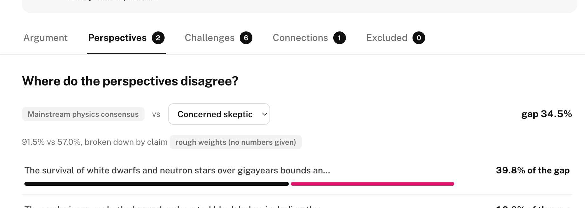
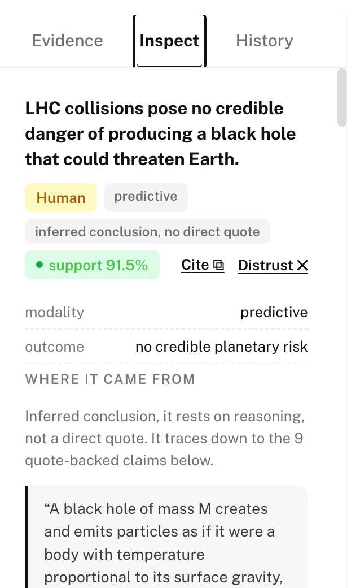
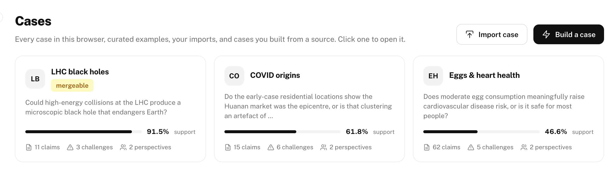

Executive Summary
Research is rarely limited by a lack of information. More often, it is limited by the difficulty of understanding how evidence fits together, why experts disagree, and what changed when new evidence appeared.
Today's AI systems are remarkably good at producing answers. They are far less effective at preserving the process that produced those answers. Once an investigation is compressed into a polished summary, much of its value disappears. It becomes difficult to inspect the reasoning, revisit individual claims, merge work with collaborators, or understand why one conclusion replaced another. Epistemic Git was built to preserve that process.
It combines AI, deterministic analysis, and human judgement into a single workflow for building knowledge that remains inspectable over time. AI performs the labour-intensive work of extracting evidence, proposing claims, reconstructing reasoning, identifying weaknesses, and connecting related ideas. Deterministic algorithms validate structure, calculate support, detect shared-origin evidence, compare competing perspectives, and preserve complete version histories. Researchers remain responsible for reviewing evidence, making judgements, and deciding what to trust.
Rather than producing another answer, Epistemic Git produces a living record of an investigation. Every claim remains connected to the evidence behind it. Every challenge remains attached to the reasoning it questions. Every revision becomes part of the history instead of replacing it. Different interpretations can coexist within the same evidence base, making disagreement something to examine rather than something to erase.
This paper introduces the ideas behind Epistemic Git, explains the workflow that powers it, demonstrates the system through three case studies, and discusses both its current capabilities and its limitations. Our contribution is not another AI model. It is a practical framework for building research that can be inspected, challenged, updated, and shared without losing the reasoning that made it trustworthy.
01 · The Problem
Ask a modern AI research assistant a difficult question and you'll usually get a polished answer. It may include a clear conclusion, a few caveats, and a list of citations. Sometimes that's exactly what you need. But research rarely ends with the first answer.
Come back to the same investigation a week later and new questions begin to appear. Which exact passage in the seventh paper supports this claim? Which conclusions came directly from the evidence, and which were introduced by the AI or the researcher? Did two seemingly independent studies actually rely on the same dataset? If another researcher reaches a different conclusion, can those two investigations be compared without one silently replacing the other? And when new evidence appears, can we see not only what changed, but why it changed? In most cases, the answer is no.
Once an investigation has been compressed into a polished summary, much of the work that produced it disappears. The citations remain, but the reasoning, the uncertainty, the disagreements, and the path from evidence to conclusion become difficult to recover. This is not simply a writing problem. It is a representation problem.
A final answer is an excellent way to communicate a conclusion, but a poor way to preserve an investigation. It cannot easily be inspected, challenged, updated, merged with another investigation, or reused piece by piece. Research needs something more durable than a verdict. It needs a living record of how knowledge was built.
The Future of Life Foundation frames trustworthy AI research as three connected responsibilities: ingestion, structure, and assessment (Future of Life Foundation, 2026). Epistemic Git adopts that foundation and adds a fourth: history. It preserves not only what an investigation concludes today, but how those conclusions evolved over time.
Traditional citations answer one important question: where did this statement come from? Epistemic Git extends that idea by preserving the information researchers actually need as an investigation evolves.
| What a researcher wants to know | What Epistemic Git preserves |
|---|---|
| Where did this claim come from? | The original source, exact supporting quote, location in the source, and a fingerprint of the source version. |
| What supports this claim today? | The reasoning, supporting evidence, assumptions, and their current contribution. |
| How has this changed? | A complete version history with comparisons between recorded states. |
| Why did it change? | The evidence, challenges, updates, or merges that changed the conclusion. |
| Where do researchers disagree? | Separate perspectives over the same evidence, together with a ranked explanation of the disagreement. |
Traditional citations remain essential. Epistemic Git does not replace established citation standards such as APA. Instead, it extends them. When a researcher selects Cite this Claim, the system generates a standard scholarly citation alongside a richer evidence record containing the supporting quotes, reasoning path, support breakdown, and recorded disagreements. A citation tells us where a statement came from. Epistemic Git helps us understand why that statement is currently believed.
02 · Why Current AI Workflows Fall Short
Research is rarely limited by a shortage of ideas. More often, it is limited by the time it takes to find relevant evidence, extract claims accurately, compare competing findings, reconstruct arguments, and keep uncertainty attached to the places where it belongs. These are exactly the kinds of tasks AI can help with, provided its role is clearly defined. Epistemic Git uses AI to assist with the work that is repetitive, time-consuming, and difficult to scale. It leaves judgement, interpretation, and final decisions to researchers.
The workflow follows eight stages, each producing structured information that can be inspected, challenged, and reused.
The workflow begins with the source itself. AI identifies individual claims and links each one to the exact quotation that supports it. Where appropriate, it also records details such as the population, intervention, comparator, outcome, timeframe, modality, and magnitude. If a proposed claim cannot be traced back to a supporting quotation, it is not accepted as evidence. Instead, it is placed in Excluded, together with a clear explanation of why it was rejected.
Research rarely says the same thing twice. Two studies may appear similar while answering different questions. Others may genuinely support, contradict, narrow, broaden, or complement one another. Epistemic Git records these relationships explicitly instead of collapsing them into a single statement. The claims "Eggs increase cardiovascular risk," "Eating more than one egg per day is associated with higher mortality among adults with diabetes," and "Replacing refined carbohydrates with eggs may reduce cardiovascular risk" describe different relationships. Treating them as identical would erase important scientific context.
Evidence alone does not explain why a conclusion follows. The AI proposes the reasoning that connects premises to conclusions, while recording who proposed each step, the assumptions it depends on, the strength of the reasoning, and the conditions under which it would no longer hold. The system proposes reasoning. It does not declare truth.
Every investigation should be able to challenge itself. Epistemic Git automatically looks for common reasoning failures, including unsupported claims, scope drift, correlation presented as causation, missing qualifications, non-independent evidence, circular citations, superseded findings, and invalid logical steps. Every challenge must point to a specific claim, reasoning step, or missing piece of evidence. Nothing is criticised in the abstract.
Research changes over time. New evidence may strengthen a conclusion, weaken it, or change it completely. Instead of replacing earlier work, Epistemic Git records what changed, why it changed, and how the supporting evidence evolved. Earlier versions remain available, making the investigation a continuous history rather than a sequence of disconnected files.
Different researchers often investigate the same question independently. Epistemic Git identifies objects by their content rather than by where they were created. Matching claims merge automatically. New evidence is preserved. Conflicting interpretations remain visible instead of being silently overwritten. The result is a shared evidence base that can grow without forcing agreement.
AI reads documents, proposes claims, connects related ideas, reconstructs reasoning, identifies weaknesses, and explains results. Deterministic algorithms validate records, calculate support, detect shared-origin evidence, compare perspectives, preserve version history, and merge investigations. Researchers choose sources, review every proposal, interpret the evidence, and decide what should ultimately be trusted. AI accelerates research, but it never becomes the final authority.
03 · The Solution
The outcome of this workflow is not a report. It is a structured record of an investigation that can continue to grow over time. In Epistemic Git, every investigation is stored as a Case. A case brings together everything needed to understand a research question: its sources, supporting quotes, claims, reasoning, challenges, perspectives, history, and excluded proposals. Internally this object is called a Bundle. Researchers never need to think about that name; it exists for the protocol, not for the user.
At its simplest, every investigation follows the same path.
Around that chain sit four additional types of information that preserve the context of an investigation:
A claim is more than a sentence. Scientific conclusions often depend on details such as the population being studied, the intervention, the comparator, the outcome, the timeframe, the modality, and the magnitude of an effect. Epistemic Git stores these details as structured information so that claims which sound similar, but answer different questions, remain distinct. The extraction process is more demanding, but the resulting knowledge base is far more precise.
Evidence alone does not explain a conclusion. Someone must argue that certain premises justify a particular claim. For that reason, every reasoning step records who proposed it, why the premises support the conclusion, which assumptions it depends on, and under what conditions that reasoning should no longer be trusted. This extends Toulmin's model of argument from a way of describing reasoning into a structure that software can inspect and preserve (Toulmin, 1958).
Accepting a claim is not a property of the claim itself. It is a property of the person interpreting it. Epistemic Git separates evidence from judgement by storing decisions inside Perspectives rather than inside claims. Different researchers can therefore share the same evidence, quotations, and reasoning while reaching different conclusions. Within the protocol this layer is called an Overlay. Inside the product it simply appears as a Perspective.
Every durable object receives a SHA-256 identifier generated from the information that defines it. Changing incidental details, such as who imported it or when, does not create a new identity. Only changing the content itself does. This approach follows the tradition of content-addressed systems such as Merkle structures and IPFS (Merkle, 1988; Benet, 2014). It allows independently created investigations to merge naturally without requiring a central database or a single owner.
Every claim, reasoning step, connection, challenge, and explanation records where it came from. Some originate directly from source material. Some are proposed by AI. Others are created or edited by researchers. Keeping those contributions separate makes every part of an investigation traceable and open to review. This idea builds on earlier work in argument mapping and nanopublications (Groth et al., 2010; Kunz & Rittel, 1970). The individual ideas are not all new. Their integration is. The result is one shared evidence base, multiple explicit interpretations, and a version history that allows knowledge to evolve without erasing disagreement.
04 · How Epistemic Git Explains Disagreement
Most research tools can tell you what different people believe. Very few can explain why they disagree. Because evidence, reasoning, and judgement are stored separately, Epistemic Git can compare different interpretations of the same investigation without forcing them into a single conclusion. Rather than asking which perspective is "correct," it asks a more useful question: what exactly is driving the disagreement?
For any selected perspective, Epistemic Git calculates how strongly the available evidence supports a claim. Support is built from the structure of the investigation itself. Independent lines of evidence each strengthen a conclusion without guaranteeing it. Premises that must all be true are evaluated together. Recorded challenges reduce support. Each reasoning step is weighted according to its declared strength and by what the active perspective accepts or questions. The result is shown as Support, not Confidence. Support describes how well a conclusion is backed by the current evidence and reasoning within the investigation. It is not presented as the probability that a claim is objectively true.
Multiple papers do not always represent multiple pieces of evidence. Different publications may analyse the same dataset, repeat the same experiment, share authorship, or rely on a common source. Treating these as independent can create the false impression that a conclusion is more strongly supported than it really is. Epistemic Git identifies these relationships as shared-origin evidence. When the researcher enables Don't double-count shared evidence, the system treats related evidence as a single line of support instead of counting every appearance separately. This turns a common research warning into an enforceable rule.
Researchers often disagree without disagreeing about everything. Two perspectives may accept the same evidence but interpret one key assumption differently. Epistemic Git compares those perspectives one difference at a time. For each disputed judgement, the system temporarily substitutes one perspective's decision for the other's, recalculates the result, and measures how much the disagreement changes. Ranking those changes reveals the crux: the unresolved point that contributes most to the disagreement. Resolving it would bring the two interpretations closer together than resolving any other single issue.

At first glance the debate appears to depend almost entirely on Hawking radiation, the most widely discussed part of the safety argument. The structural analysis tells a different story. The investigation contains two largely independent lines of evidence. The first is theoretical: microscopic black holes should evaporate through Hawking radiation before they can grow (Hawking, 1975). The second is empirical: naturally occurring cosmic-ray collisions have exposed Earth, white dwarfs, and neutron stars to even higher-energy collisions for billions of years, yet those objects still exist (Ellis et al., 2008; Giddings & Mangano, 2008). When the Hawking-radiation premise is removed, support decreases only from 91.5% to 87.8%. The comparison shows the stellar-survival argument explains roughly 40% of the disagreement, while the Hawking-radiation premise accounts for about 11%. Epistemic Git reveals the evidence that quietly carries the conclusion, even when it receives far less attention.
05 · From Workflow to Working Product
A workflow is only useful if researchers can use it without learning a new way of thinking. Epistemic Git was designed around the questions researchers naturally ask during an investigation, not around the internal structure of the protocol. The interface hides implementation details and instead guides users through the evidence as they build, inspect, and challenge a case.
The application begins with the research question, followed by Current Support, which reflects the active Perspective. From there, the interface is organised around five simple questions:
| The question a researcher asks | Where the interface answers it |
|---|---|
| Why does this conclusion hold? | Argument |
| Where do interpretations diverge? | Perspectives |
| What reasons are there to doubt this? | Challenges |
| Which evidence belongs together? | Connections |
| What was rejected, and why? | Excluded |
Selecting a claim opens Inspect, where every important detail remains attached to the same object: its source, supporting quotes, reasoning, related claims, history, recorded challenges, and competing perspectives. The interface deliberately uses familiar language so that researchers can understand the investigation without first understanding the protocol.

AI appears only where it accelerates research without replacing judgement. It proposes weaknesses for review, produces grounded summaries from deterministic analyses, answers questions using only evidence contained within the current case, and can draft a Perspective that researchers remain responsible for reviewing and saving. In every instance, AI assists the investigation but never becomes the final authority. Git inspired the underlying principles of identity, history, branching, and merging; the product translates those ideas into language that feels natural to researchers rather than software developers.
06 · Evaluation and Validation
A system designed to expose unsupported reasoning should itself be subjected to the same level of scrutiny. Epistemic Git includes an adversarial evaluation suite in which deliberately planted failures pass through the same extract, connect, reconstruct, and challenge workflow used for ordinary investigations. The objective is not to prove the system cannot fail, but to verify that common reasoning failures are detected, attributed, or preserved in ways that remain open to inspection.
| Planted failure | Expected behaviour |
|---|---|
| Prompt injection embedded in source text | Reject the instruction while preserving legitimate claims nearby |
| Correlation presented as causation | Preserve the observational wording and challenge the causal leap |
| Shared datasets counted twice | Record a shared origin instead of treating the evidence as independent |
| Scope, population, or timeframe drift | Keep materially different claims separate |
| Misleading abstract | Ground claims in the source itself and retain qualifications |
| Review counted with its primary study | Detect dependency between the sources |
| Quote taken out of context | Reject the misleading extraction |
| Later correction or retraction | Preserve the earlier record while marking it as superseded |
| Unsupported consensus claim | Exclude the unsupported assertion |
| Narrow study generalised too broadly | Challenge the inappropriate generalisation |
The committed regression suite records all ten planted failures as successfully detected. This result applies only to the defined evaluation suite and should not be interpreted as evidence of general robustness. Its purpose is to demonstrate that the workflow behaves consistently against known failure modes while creating a permanent record of both failures and fixes.
One example illustrates the approach. During development, a prompt injection hidden inside a source document was incorrectly accepted as a normal claim. Rather than removing this mistake from the project's history, it became part of the regression suite. A deterministic extraction-stage defence now excludes claims originating from marked injection regions while preserving legitimate evidence from the same document. The earlier failure remains visible, because improving an epistemic system should never require rewriting its own history.
Before collecting results, we froze the design of a comparative evaluation spanning three research workflows, seven research tasks, and seven assessment measures. The benchmark has been specified, but the external runs, expert reviews, and human evaluation have not yet been completed. We therefore do not claim superior research performance, improved user reasoning, expert endorsement, or calibrated accuracy beyond the evidence presented here. Leaving an empty result empty is not a matter of modesty; it is part of the epistemic method.
07 · Case Studies
A workflow for trustworthy knowledge should not succeed only on one type of question. To evaluate its generality, Epistemic Git was applied to three deliberately different investigations: a technically settled scientific question, a live scientific dispute, and an everyday health question whose apparent simplicity hides substantial ambiguity.
| Case | Why it was chosen | What the workflow reveals |
|---|---|---|
| LHC black holes 91.5% support | A technically complex question widely regarded as settled | Two independent safety arguments, shared-origin evidence, and a crux showing that the empirical argument contributes more than the widely discussed Hawking-radiation premise. |
| COVID-19 origins 61.8% support | A live scientific disagreement built on overlapping evidence | Competing perspectives over a shared evidence base, contradictory claims, and a qualitative crux rather than a manufactured probability. |
| Eggs and heart health 46.6% support | A familiar question that is often asked too broadly | How population, dose, comparator, outcome, and study design change the answer instead of producing a single universal conclusion. |
The LHC investigation demonstrates that the most visible argument is not always the one carrying the conclusion. Structural analysis shows that the empirical evidence from naturally occurring cosmic-ray collisions contributes more to the overall safety case than the widely discussed Hawking-radiation argument.
The COVID-19 investigation demonstrates that opposing interpretations do not require separate databases. Researchers with different views can share the same sources, claims, and reasoning while expressing different perspectives over a common evidence base. The workflow identifies the assumptions driving their disagreement without pretending to calculate the probability of a contested historical event.
The eggs investigation shows that many everyday research questions are underspecified rather than controversial. Rather than averaging conflicting findings into a single answer, Epistemic Git preserves those distinctions as part of the investigation.
Together, these case studies support a single claim: the representation is flexible enough to organise settled questions, active scientific disagreements, and ambiguous everyday research within the same workflow. They do not demonstrate that the system scales to every discipline or every evidence base, and we make no such claim.

08 · Limitations and Future Work
The current prototype demonstrates a practical workflow for preserving evidence, reasoning, disagreement, and history, but several important challenges remain.
The present evaluation is intentionally limited. The most important remaining question is not whether the system functions, but whether researchers using Epistemic Git produce more reliable, better-supported, and more transparent investigations than existing workflows. Future work will focus on completing those evaluations, expanding evidence-lineage detection, improving interoperability, strengthening collaborative workflows, and testing the protocol on larger, independently developed knowledge bases. The guiding principle will remain unchanged: AI may assist every stage of an investigation, but every conclusion must remain attributable, challengeable, and ultimately subject to human judgement.
Conclusion
Research rarely fails because there are too few answers. More often, it fails because the path from evidence to conclusion is difficult to inspect, difficult to challenge, and difficult to continue. Epistemic Git proposes a different approach. Rather than treating a conclusion as the final product of research, it preserves the evidence, reasoning, disagreement, and history that produced it. The contribution of this work is not simply another AI research assistant. It is a workflow and open protocol for building knowledge that can be inspected, challenged, merged, and revised without losing the reasoning that made it defensible in the first place.
A citation tells us where a statement came from.
Epistemic Git preserves how it came to be believed.
References
Alexander, S. (2024, March). Practically-a-book-review: Rootclaim $100,000 lab leak debate. Astral Codex Ten. https://www.astralcodexten.com/p/practically-a-book-review-rootclaim
Benet, J. (2014). IPFS: Content addressed, versioned, P2P file system (arXiv:1407.3561). arXiv. https://doi.org/10.48550/arXiv.1407.3561
Débarre, F., & Worobey, M. (2024a). Confirmation of the centrality of the Huanan market among early COVID-19 cases (arXiv:2403.05859). arXiv. https://doi.org/10.48550/arXiv.2403.05859
Débarre, F., & Worobey, M. (2024b). No evidence of systematic proximity ascertainment bias in early COVID-19 cases: Reply to Weissman (arXiv:2405.08040). arXiv. https://doi.org/10.48550/arXiv.2405.08040
Ellis, J., Giudice, G., Mangano, M., Tkachev, I., Wiedemann, U., & LHC Safety Assessment Group. (2008). Review of the safety of LHC collisions. Journal of Physics G: Nuclear and Particle Physics, 35(11), 115004. https://doi.org/10.1088/0954-3899/35/11/115004
Future of Life Foundation. (2026). Lab leaks, black holes, and eggs: Epistemic case study competition [Competition brief].
Giddings, S. B., & Mangano, M. L. (2008). Astrophysical implications of hypothetical stable TeV-scale black holes (arXiv:0806.3381). arXiv. https://doi.org/10.48550/arXiv.0806.3381
Groth, P., Gibson, A., & Velterop, J. (2010). The anatomy of a nanopublication. Information Services & Use, 30(1-2), 51-56. https://doi.org/10.3233/ISU-2010-0613
Hawking, S. W. (1975). Particle creation by black holes. Communications in Mathematical Physics, 43(3), 199-220. https://doi.org/10.1007/BF02345020
Ji, Z., Lee, N., Frieske, R., Yu, T., Su, D., Xu, Y., Ishii, E., Bang, Y., Madotto, A., & Fung, P. (2023). Survey of hallucination in natural language generation. ACM Computing Surveys, 55(12), Article 248. https://doi.org/10.1145/3571730
Kunz, W., & Rittel, H. W. J. (1970). Issues as elements of information systems (Working Paper No. 131). Institute of Urban and Regional Development, University of California, Berkeley.
Lewis, P., Perez, E., Piktus, A., Petroni, F., Karpukhin, V., Goyal, N., Küttler, H., Lewis, M., Yih, W., Rocktäschel, T., Riedel, S., & Kiela, D. (2020). Retrieval-augmented generation for knowledge-intensive NLP tasks. Advances in Neural Information Processing Systems, 33, 9459-9474.
Merkle, R. C. (1988). A digital signature based on a conventional encryption function. In C. Pomerance (Ed.), Advances in Cryptology: CRYPTO '87 (Lecture Notes in Computer Science, Vol. 293, pp. 369-378). Springer. https://doi.org/10.1007/3-540-48184-2_32
Toulmin, S. E. (1958). The uses of argument. Cambridge University Press.
Weissman, M. B. (2024). Proximity ascertainment bias in early COVID case locations (arXiv:2401.08680). arXiv. https://doi.org/10.48550/arXiv.2401.08680
Egg as food. (2026). In Wikipedia. Retrieved July 18, 2026, from https://en.wikipedia.org/wiki/Egg_as_food